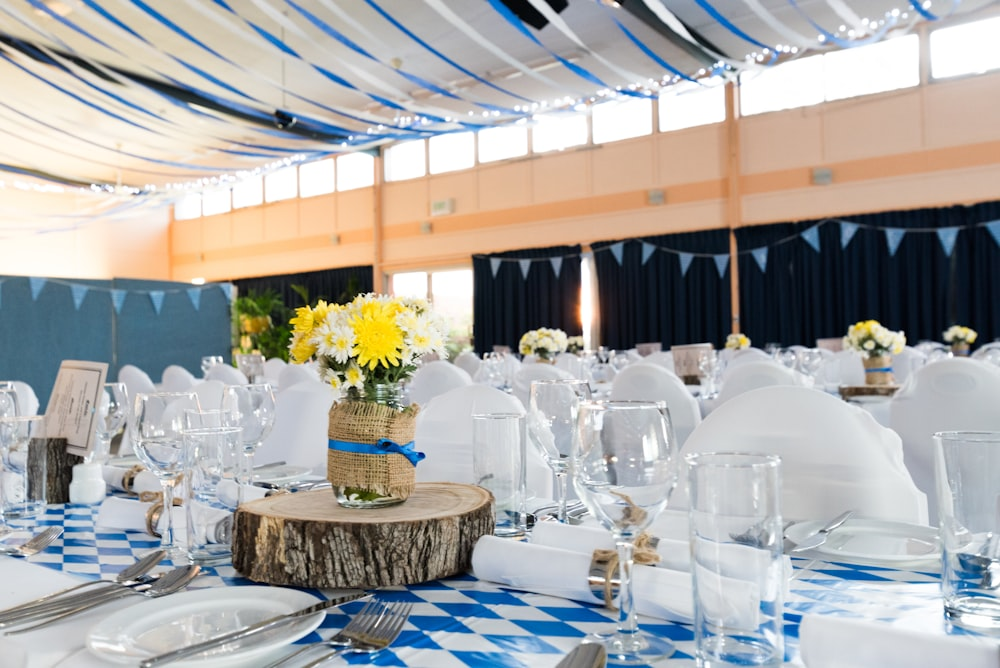
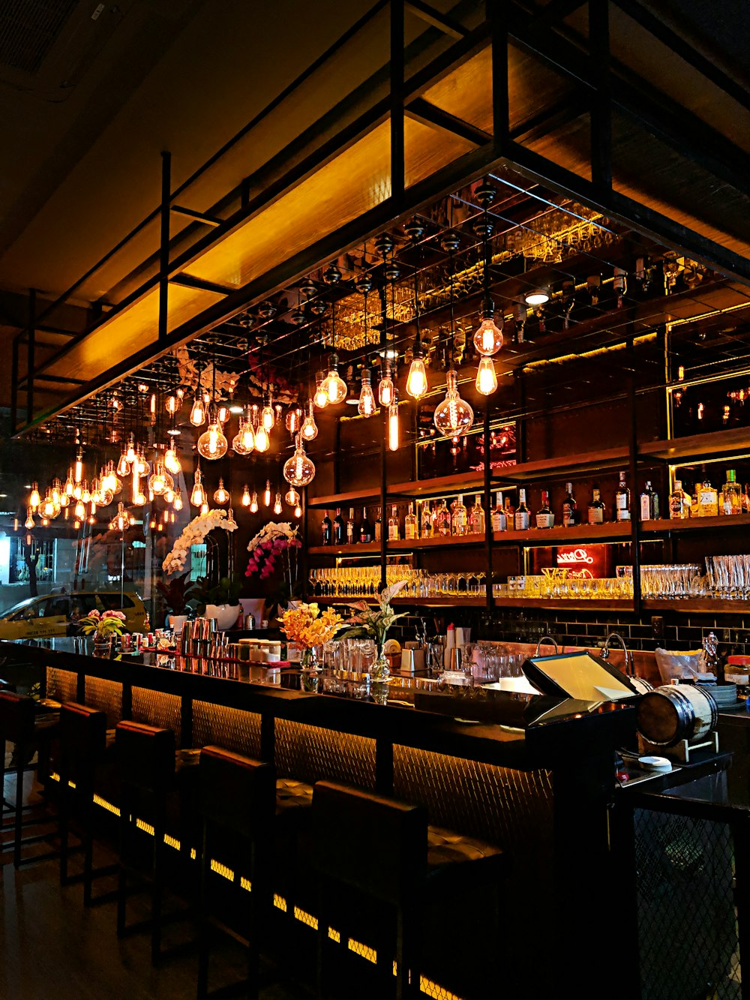

Celebrations
Weddings & milestones
Intimate weddings, big birthdays and anniversaries. We handle the food, drink, flowers and flow so you can sit down and enjoy your own party.
Private events
Birthdays, anniversaries, milestone dinners, intimate weddings and company suppers — held above the mill in a candlelit room built for long evenings and longer conversations.

The room
Up a worn timber staircase from the kitchen, The Hayloft keeps its original beams, stone gable and a wall of west-facing windows that catch the evening light. We set it with one long oak table, beeswax candles and foraged greenery from the lanes that week.
It seats up to forty for a sit-down dinner, or fifty standing for a relaxed reception. Hire it on its own, or take the whole mill — dining room, loft and terrace — for the day.
See where the menu comes from →What we host

Celebrations
Intimate weddings, big birthdays and anniversaries. We handle the food, drink, flowers and flow so you can sit down and enjoy your own party.

Seasonal suppers
Our own ticketed feasts marking the turning seasons — a whole-beast roast, a tomato dinner in August, a wild-game night in winter. Join a table or book the room.

Daytime & corporate
Half-day kitchen-garden workshops, supplier tours and private lunches. A genuine taste of the valley, and a story your team will keep telling.
Dining packages
Every menu is written for your date around what's in season. Prices are per guest and include service; drinks pairings are optional.
Daytime
A relaxed three-course lunch served family-style down the table.
Most booked
Our signature evening — a five-course seasonal menu with the kitchen in full flight.
Exclusive
Take the entire restaurant — loft, dining room and terrace — for a wedding or grand occasion.
A recent guest
"We married in the Hayloft with thirty-eight people and one impossibly long table. The food made grown men cry and the candles were still lit at midnight. Faultless, the whole day."Hannah & Will · September wedding
Good to know
Most private events are confirmed three to six months out, and summer weekends and December dates can go a year ahead. That said, do ask about short-notice availability — gaps appear, and a midweek loft dinner can often be arranged within a fortnight.
Always. Because every menu is written from scratch for your date, we build around your guests rather than bolting on alternatives. Tell us about allergies, vegetarian, vegan and other needs when you enquire and we'll design with them in mind.
You'll agree a shape and a price in advance, but the final dishes are confirmed close to the date so we can cook what's truly at its best. We'll always walk you through the plan and send a sample menu before the day.
The Hayloft carries a minimum spend that varies by day and season — typically the equivalent of ten to twenty covers. Exclusive hire of the whole mill is priced individually. We'll be completely clear about costs in your first quote, with no surprises later.
The Harlow Arms in the village has eight rooms a two-minute walk away, and there are several farm stays and inns within ten minutes. We're happy to share a list and help with a group booking.
Send us the date, the number of guests and the occasion, and our events host Tom will be back to you within two working days with ideas and availability.